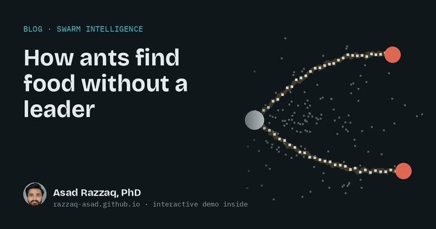
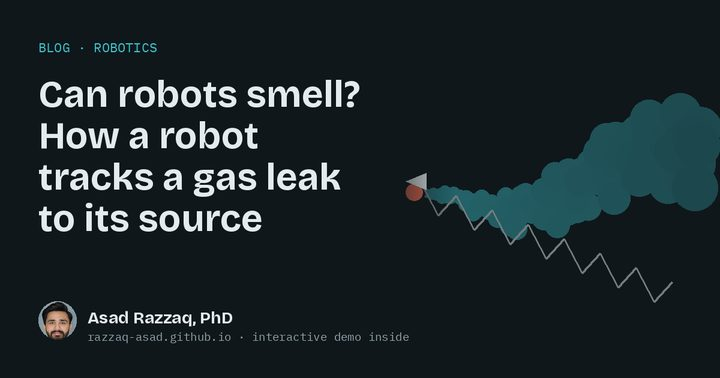
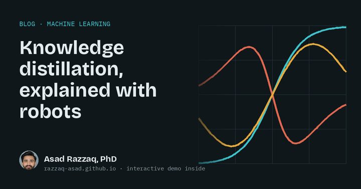
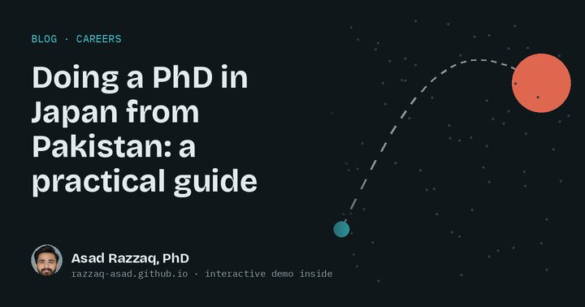

Blog
Robots, swarms and AI, explained
Short articles on swarm intelligence, evolutionary robotics and machine learning. Each comes with a simulation you can play with in your browser. Written for curious people, whether or not you work in robotics.

Swarm intelligence
How ants find food without a leader
No ant knows the map and nobody is in charge, yet the colony finds short paths to food. Here is how, with a simulation you can play with.

Swarm robotics
Picking a playing XI for robots: how many scouts does a swarm need?
A cricket captain picks a different XI for a turning pitch than for a green one. Teams of robots need the same thinking, and the right mix keeps changing.

Evolutionary robotics
Watch a genetic algorithm teach robots to drive
Nobody programs these robots. They start with random brains and get better by selection, crossover and mutation. Then there is a course they cannot solve, and that is the best lesson of all.

Robotics
Can robots smell? How a robot tracks a gas leak to its source
“Follow the smell to where it is strongest” sounds easy. In moving air it mostly fails. Here is why, and what moths do instead.

Machine learning
Knowledge distillation, explained with robots
A small “student” network learns by copying bigger or more specialised “teachers”. Watch one learn three behaviours at once, and see why it matters for robots.

Careers
Doing a PhD in Japan from Pakistan: a practical guide
I came to Japan from Pakistan as a research student, finished my PhD at the University of Toyama and now work in Kyoto. These are the steps and sources I point people to.